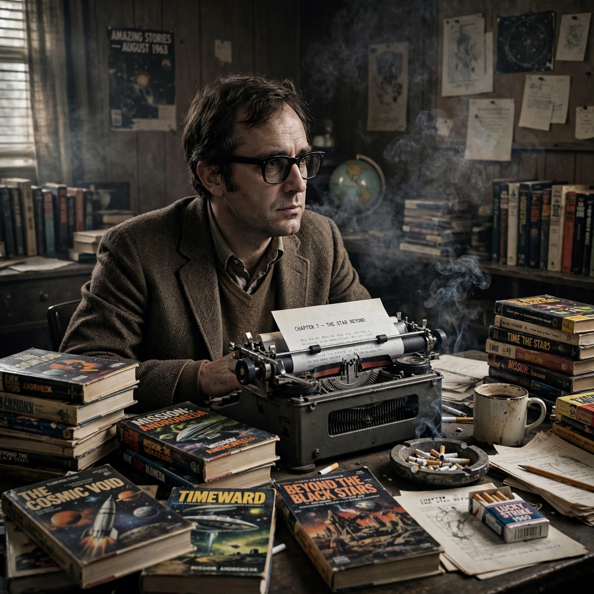

From Wikipedia, the free encyclopedia
| Philip K. Dick | |
|---|---|
| Born | 16 December 1928, Chicago, Illinois, US |
| Died | 2 March 1982 (aged 53), Santa Ana, California, US |
| Occupation | Novelist, short story writer |
| Genre | Science fiction |
| Notable works | The Man in the High Castle; Do Androids Dream of Electric Sheep?; Ubik; A Scanner Darkly |
| Awards | Hugo Award (1963) |
Philip Kindred Dick (December 16, 1928 – March 2, 1982), often referred to by his initials PKD, was an American science fiction writer who wrote 44 novels and some 121 short stories in a career marked by poverty and critical neglect in his lifetime, followed by enormous posthumous fame. His fiction explores the instability of reality, the nature of consciousness and identity, authoritarian power, and religious experience, typically through the eyes of ordinary, bewildered people.
Dick's twin sister Jane died in infancy, an event that haunted him. Raised largely in California, he sold stories to science fiction magazines from the early 1950s, publishing novels at a furious pace for the paperback market. The Man in the High Castle (1962), an alternate history of Axis victory, won the Hugo Award, but mainstream success eluded him, and he struggled with money, five marriages, and amphetamine use. In February and March 1974 he underwent a series of mystical experiences — "2-3-74" — involving a pink beam of light and a vast intelligence he called VALIS, which he spent the rest of his life interpreting in his huge private journal, the Exegesis, and in the novels VALIS (1981) and its companions.
Major novels include Martian Time-Slip, Do Androids Dream of Electric Sheep? (1968, filmed as Blade Runner), The Three Stigmata of Palmer Eldritch, Ubik (1969), Flow My Tears, the Policeman Said, and A Scanner Darkly (1977). His stories have been adapted into films including Total Recall, Minority Report, and A Scanner Darkly. Dick died of a stroke in 1982, just months before Blade Runner's release made him famous; in 2007 he became the first science fiction writer included in the Library of America.
Science fiction · The Man in the High Castle · Blade Runner
